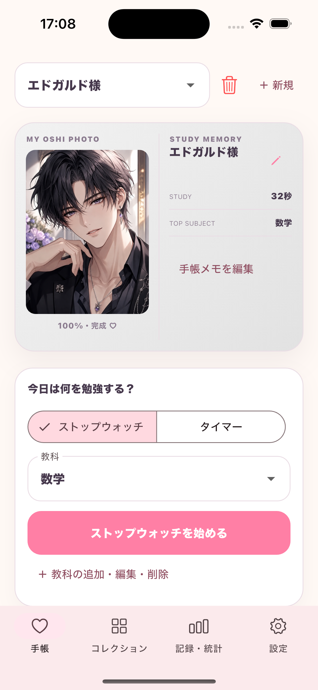
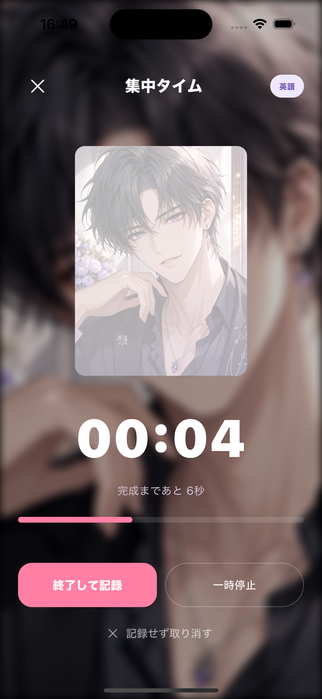
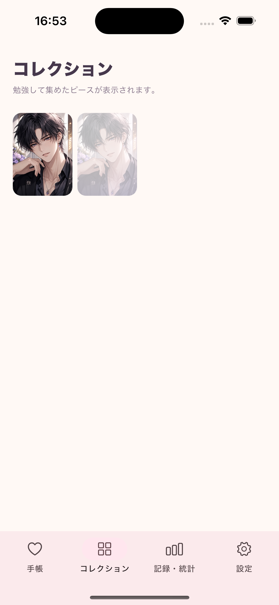
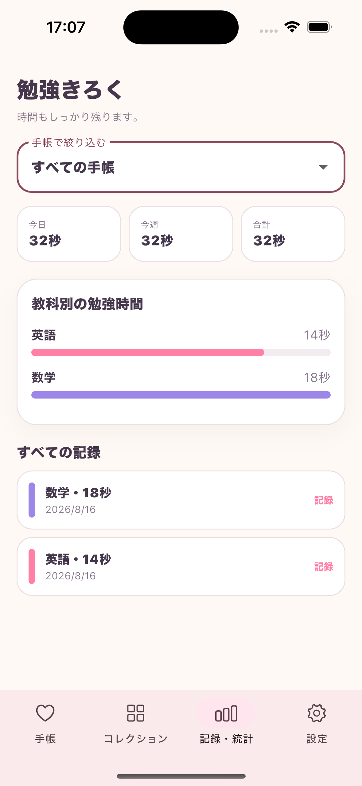

01
1秒から進む
短い勉強でも、その時間に比例して白いヴェールが薄くなります。頑張りを無駄にしません。
STUDY COLLECTION APP
勉強した時間で、見えなかった推しの一枚を育てる学習タイマー。 小さな頑張りが写真の変化になって、今日の「始めよう」を後押しします。

WHY OSHI TO STUDY?
数字だけでは気づきにくい努力を、少しずつ鮮明になる一枚の写真として残します。
短い勉強でも、その時間に比例して白いヴェールが薄くなります。頑張りを無駄にしません。
「もう少し写真を見たい」という気持ちが、机に向かう最初の一歩になります。
手帳の規定時間に到達するたび、完成した推しフォトが新しいピースとしてコレクションに加わります。
APP SCREENS
計測から記録、コレクションまで。頑張った時間がひとつのアプリにつながります。
規定時間まで勉強すると推しフォトが完成。そのまま同じ手帳を使い続けられます。

お気に入りの一枚をそばに、ストップウォッチやタイマーで勉強。

途中は現像中の姿で表示。規定時間に到達するたび、同じ画像の完成ピースが新しく加わります。

今日・今週・合計や教科ごとの勉強時間を、あとから振り返れます。
FEATURES
計測・記録・振り返りまで、勉強の流れをひとつの手帳にまとめます。
HOW TO USE
好みのデザインと、完成までの目標時間を選びます。
端末から、育てたいお気に入りの一枚を設定します。
教科を選び、ストップウォッチまたはタイマーを開始します。
規定時間ごとにピースを追加。手帳は完成状態のまま、次の1枚に向けて使い続けられます。
推しとStudyで、小さな「できた」を一枚ずつ集めよう。
POLICY & SUPPORT
プライバシー、利用条件、サポート窓口についてご案内します。
制定日：2026年8月16日
推しとStudy（以下「本アプリ」）は、学習記録や選択した画像を外部サーバーへ送信せず、原則として利用者の端末内だけで処理・保存します。
選択した画像、手帳のタイトル・メモ・デザイン・デフォルト教科、教科名・学習日時・学習時間・タイマー設定、完成した手帳とコレクション情報を端末内で取り扱います。氏名、住所、電話番号、メールアドレス、正確な位置情報、連絡先、広告識別子は収集せず、アカウント登録もありません。
画像は利用者が明示的に選んだ場合のみ取得します。その他の情報はアプリ内操作に応じて作成され、学習時間の計測・集計、画像表示の更新、手帳・記録・コレクションの表示、状態復元にのみ使用します。広告、追跡、プロファイリング、販売には使用しません。
データは端末内に保存され、利用者が削除するまで保持されます。手帳の削除またはアプリ内の全データ初期化で削除できます。アンインストール時も通常は削除されますが、OS等のバックアップ内に一定期間残る場合があります。
画像、学習記録、設定を開発者または第三者へ送信・販売・提供しません。現時点で広告SDK、アクセス解析SDK、クラッシュ解析SDKは使用していません。App StoreやOS標準機能に伴いAppleが扱うデータにはAppleのポリシーが適用されます。
年齢を問わず個人情報の入力を求めず、保護者の同意が必要な個人情報を意図的に収集しません。本ポリシーの重要な変更は本ページまたはアプリ内でお知らせします。
制定日：2026年8月16日
本アプリを利用することで本規約に同意したものとみなします。本アプリは学習時間を計測・記録し、選択画像の変化やコレクションを楽しむ学習支援アプリであり、特定の学習成果、試験合格、成績向上は保証しません。
利用する権利を持つ画像のみを設定してください。法令・公序良俗違反、第三者の著作権・肖像権・プライバシー等の権利侵害、不正利用・解析・妨害、安全性を損なう行為を禁止します。
データは原則として端末内に保存されます。端末の故障、紛失、機種変更、アプリ削除等に備え、利用者自身で端末を管理してください。本アプリは現状有姿で提供され、法令で認められる範囲で、利用または利用不能により生じた損害について責任を負いません。
改善、保守、法令対応等のため、内容の変更または提供の停止・終了を行う場合があります。本規約は日本法に準拠します。
不具合、ご質問、ご意見はGitHubのサポート窓口からご連絡ください。端末・OS・アプリのバージョンと発生した操作を添えてください。不要な個人情報は記載しないでください。
お問い合わせを作成する